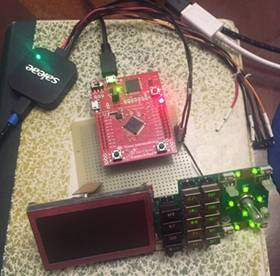
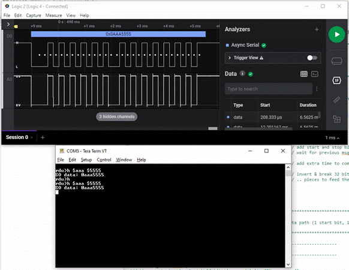

IC-900 Remote Controller Clone Project Page, Part I
Updated 08/04/2021
← Back to the Projects page... Part II... →|
I’ve worked with the IC-901 radios and the IC-900 band modules for many years, but have not actually owned an IC-900 radio until recently. The IC-900 is the predecessor to the IC-901, and has a similar form-factor in that they both have expandable frequency coverage by way of add-on TX/RX band modules (some of the IC-900 modules can also be used with the IC-901). For the IC-900, there are 6 FM add-on modules: 10m, 6m, 2m, 220, 440, and 1296. Photo 1 illustrates the distributed nature of this radio. What is really amazing to me is that this radio model was first introduced in 1987, making it a contemporary antique by some standards – yet, it still has features that are difficult, if not impossible, to find in more modern radios. Decades after being discontinued the radio and its accessories are still sought after by some. This 2-part article describes my efforts to clone the remote control hardware for this radio.
Photo 1. The essentials of the IC-900 system. A Brief Sojourn down the Rabbit Hole… I recently purchased the three main components of an IC-900 (the “A” and “B” logic units and the remote controller) where they were advertised as “for parts only”. There were no cables, so I gambled that the main reason they didn’t work was, ah… that there were no cables. After fabricating the missing cables, the gamble paid off and I had a working radio. There was one small problem: there were a couple of segments on the controller display that would start flashing shortly after turning on the radio. I first thought it might be the “zebra” connectors that attach the LCD glass to the PCB. However, the flash rate was very regular, and I could manipulate the radio state with the controller buttons and get the flashing to stop (by putting the radio into a mode whereby the indicated segments flash normally, and then getting out of that mode whereby the flashing was supposed to cease). This worked consistently, but the flashing would always return after a few seconds or at most, a minute. This essentially ruled out the “zebra” connectors. So, next I figured that there was a signal integrity issue between the processor and the LCD controller chips – a synchronous-serial peripheral interface (generally referred to as SPI or SSI) is used to clock commands and data into the chip’s internal registers – noise on the clock or data could twiddle a bit that started the flashing. After using an oscilloscope to examine the clock and data lines, there wasn’t any conclusive evidence either way. I then started looking for physical problems like cracked traces or solder connections. Using a microscope, freeze spray, and flexing the circuit card, I tried to produce the issue on demand or make it fail to appear. None of these techniques revealed anything until I applied some bending pressure to the PCB and heard a pronounced “SNAP”… after which, nothing worked correctly. It is likely that I had cracked the large (64 pin) DIP controller IC body and possibly the die itself. Two words came to mind: Un-fortunate. Downtrodden, I pondered my options. IC-900 remote controllers are hard to find by themselves and they are the weakest link in the system and thus the most likely to suffer damage in real use. So, that option didn’t seem very probable. The controller I.C. is a mask-programmed microcontroller, long out of production, so finding a replacement was more of a long-shot than finding another remote controller. The only other option I could see with a modicum of possibility for success actually seemed the most far-fetched: build a new controller board using a modern ARM microcontroller, and write a control application from scratch. As rabbit holes go, maybe not so bad? See, I’m very familiar with the general premise of the IC-900/901 control scheme as I’ve reverse-engineered the IC-901 controls and deployed that knowledge in several projects. This means I know how to construct control words for the radio modules, a key step to success. Not rocket science, to be sure, but it is one less thing to have to figure out. In the case of the IC-900, the service manual was very forthcoming regarding the serial protocols and field IDs (much more so than for the IC-901). I also managed to locate a datasheet for the LCD controller chips, so reproducing the data stream to use the original display didn’t seem all that far fetched after all. I mean, how deep can a rabbit hole be?!?!? Data Capture Options While the IC-900 service manual has a fair amount of information about the data formats and structures used between the remove controller, LCD, and the base unit, there are still questions about some of the details of how the data fields behave. In considering the LCD controller data path, the main piece of missing information was how the LCD controller chip segment registers map to the physical glass segments. Also, initialization info for the LCD chips would be best measured rather than pondered. So, I needed a tool to capture the data sent to these various sub-systems so that I could answer questions as to how they are to behave. The primary tool for such tasks is the logic analyzer. A logic analyzer has some aspects that are similar to an oscilloscope and others that are somewhat different. For instance, with a logic analyzer, we typically only are interested in the logic state of a signal, “1” or “0” rather than the “analog” voltage-waveform that an oscilloscope reports. Also, we generally want to capture large amounts of data (seconds or sometimes minutes worth). Some newer oscilloscopes blur the line between oscilloscope and logic analyzer (some logic analyzers also “give as good as they get”), but stand-alone logic analyzers are still relevant. I own an old-school HP logic analyzer, and have been known to use it. However, it is old, and large, and difficult to export data for post-processing. I generally end up writing a simple application for a convenient microcontroller to capture the data I want and output it to a PC via a terminal emulator. Custom-capture using an MCU and custom software generally works, but it takes at least some effort and time to get a tool up and running (sometimes, a lot as no software project ever goes together without some amount of unplanned debug effort). In contrast to these options, I recently obtained a small (actually, VERY small) logic analyzer from a good friend that captures data using a PC application via a USB connection. The Saleae Logic 4 (https://www.saleae.com/), shown in Photo 2, is a 4-channel logic analyzer in a 1.6”x1.6”x0.35” package (like I said, VERY small). I was able to use it to capture LCD serial data and also the 29 and 30 bit asynchronous data streams used by the IC-900. Photo 2. Logic analyzer setup for LCD data capture.
With only 4 channels, there were limits to what I could capture, but I was just able to get what I needed with respect to the LCD serial connection (Saleae offers wider channel devices, but this is what I had available). This allowed me to easily capture data and correlate bit-field behavior against what was happening with the radio controller and radio system. In case you are wondering how I accomplished this with a broken controller, I didn’t. I had to borrow a working one from another friend. The data from the LCD capture in combination with the datasheet for the LCD controller chip allowed me to deduce/confirm the LCD initializations, and how some of the data was being transferred to the LCD space (there is a 7-segment decode mode supported by the chipset that ICOM used for all of the 7-segment digits, confirmed by the data capture). This process also confirmed that even though the LCD chipset can operate at 3.3V, the LCD glass requires a 5V bias setup to work properly. This early discovery allowed me to abandon the idea of a 3.3V LCD supply before spinning a PCB. I had then to add 3.3V to 5V translation buffers (74HCTxx series gates are a good choice for this function) to all of the LCD chip control lines that originate from my new, 3.3V I/O controller MCU.
Figure 1. LCD U1 and U2 data trace with decoded hex data overlaid. I captured a widescreen screenshot of the graphic trace data (spanning two 2K monitors), shown in Figure 1, and also exported the raw data to a spreadsheet, shown in Figure 2. The screenshot was informative, but a spreadsheet allows for a lot more analysis options, which the PC software easily supported. I was able to break out the captured data and decode it into command mnemonics and 7-segment data. This allowed me to easily confirm my understanding of the uPD7225 LCD driver chips operating in this particular application. The “Data” and “C/D” columns were imported from the Saleae software export. The “E” column is the “Data” converted to binary, and the “G” column is the decoded command (decoded by Excel “IF” statements performing string operations on the binary data).
Figure 2. A snippet of the LCD data decode spreadsheet. Why use an old LCD? I wanted the cloned controller to “look” like the original. This was the primary reason for using the existing display. That also meant that the existing case and buttons could also be used. All tolled, I would only need to layout one PCB to replace the existing controller PCB, and the rest of the controller could be reused with little or no modification. In addition, finding an off-the shelf graphics display is a tough proposition. It has to be just the right size, have good backlight options, the right resolution and be relatively simple to control. An alphanumeric display would be easier, but a 4x20 module (the most likely to be the right physical size) offers a very limited display experience. Cost is another consideration: many graphics displays are rather expensive, especially if they use a UART interface. So, using the existing glass just solves a lot of potential problems. In other ways, however, it can be more difficult as the segments-on-glass are immutable (so, you are stuck working with what you have) and one must reverse engineer the interface between the controller chips and the glass. The logic analyzer was of much assistance with the latter as it let me deduce the initialization data actually used by the IC-900 controller and then parrot this data back to the LCD chips to produce a first-cut test of the interface. Once I could send data from the ARM microcontroller and get the display to behave appropriately, I could move on to the task of mapping the segments. This was a bit tedious, but didn’t take long. Figure 3 illustrates a view of the segments of the display. First, I named each segment so that I could reference it in a spreadsheet. Then, I wrote a command-line function for the ARM that allowed me to send LCD commands/data to the LCD chips using an address/data argument set. I could then send a command line to turn on successive segments in the chip segment memory and correlate the resulting segments with the commands/data needed to control them. From this I could build a comprehensive segment map that could then be used to build update functions for the various LCD “areas” (there are a couple of bar-graphs, several 7-segment digits and numerous annunciator graphics).
Figure 3. The IC-900 LCD segment pattern (not all segments are shown “illuminated”) The Main Control Interface With the LCD interface nailed down, I turned my attention to the control interface. This is the bidirectional serial interface that allows the control module to set the radio peripherals (PLLs, audio and squelch levels, and other miscellaneous I/O) and also read back things like S-meter levels, the state of the squelch (open or closed) and other I/O related to the tone encoders/decoders. This interface traveled along a 3-wire cable which included the remote controller power connection. To accomplish this and keep full-duplex serial capability, ICOM chose to multiplex the “base => remote” serial path with the power connection. Multiplexing allows the connection to be simplified (vs. a half-duplex connection) while still using a 3-conductor cable. However, while the format was essentially no different from any standard 4800 baud UART interface, ICOM chose to pack all of the data needed into one word so that a single “character” was as long as 29 or 30 bits (depending on the direction). While the Logic 4 could handle these bit widths easily, there are not many on-chip-MCU UARTs that can go wider than 16 bits. This meant that some custom software would be needed to send and receive these long bit-length “characters”. At this point, I simply planned for a pair of timer resources to be used to accomplish the grunt-work of the multi-byte UART peripheral needed. I focused mainly on grabbing the data with the logic analyzer and trying to deduce the bit functions. Most of the bit-fields were defined in the service manual, or I had knowledge from prior efforts (particularly in the case of PLL formats). However, the behavior of the bits associated with the tone encode and decode features were not so readily apparent. Thus, I spent a most of my time playing with these features and looking at the bit-field results. I used the same spreadsheet technique I’d used for the LCD chip data, only there were more bits and more fields to manage. Figure 4 shows a snippet of one of these spreadsheets. Once the field extraction formulas were written, I could capture data on the logic analyzer then export it to a CSV file. Finally, I simply copied the relevant columns to the new spreadsheet and the various field data would instantly (in human time scales, at least) be displayed.
Figure 4. Remote Controller data reduction spreadsheet. The tone decode functions were the primary focus of this study. The IC-900 supports at least two types of tone encoder/decoder. The UT-29 is a “standard” CTCSS type that uses sub-audible tones in the 67 to 250 Hz range. There are 38 discrete tones that can be assigned. These are programmed with a 5-bit control value. The second type of which I am aware is the UT-28 which is a digital code squelch unit that I have not been able to decipher to any significant degree. Common digital code squelch (DCS) uses a continuous binary bit-stream operating at a low bit rate (below 250 Hz) to encode a unique sequence that can be decoded by a receiver. Tones are identified by a 3-digit octal number. With the UT-28, there are 5 decimal digits used to identify a particular tone sequence. I can surmise that this might be a DTMF or STMF (Single Tone, Multi-Frequency) burst sequence, but there just isn’t any detailed information about the protocol available from the sources I’ve tried. “Faking” the presence of a UT-28 was also not very fruitful even though this worked well for the UT-29. My motivation here is that a standard DCS system would be more useful, and I could easily design a DCS encode module to plug in place of the UT-28. However, the UT-28 appears to use a more involved interface than for the UT-29 which will likely require the acquisition of an actual UT-28 to allow a capture of cogent data. An Overview Once I had determined that I could control the LCD and understand the behavior of the radio control words, it was time to start detailing the signals, and thus the tasks that the ARM needed to process/accomplish in terms of basic I/O operations. The service manual schematic was a key facilitator for this endeavor. I was able to take key elements from the original controller schematic, and create a new schematic using my microcontroller of choice. The following list illustrates the primary “resources” that need to be interpreted or controlled by the ARM: 1) A 19-button keypad with two toggle switches. The IC-900 keypad is organized as 16 switches mux’ed with two column signals, three discrete buttons, and two discrete, on/off, slide switches (here, “discrete” means a single, dedicated I/O is used). 2) An SPI com bus to the LCD controller chips consisting of CLK, DATA, CS1, CS2, C/D (cmd/data), BUSY, and RESET. 3) Digital UP/DOWN signals from the rotary dial encoder. 4) 3 LED outputs: Main RX, SUB RX, and Main TX. 5) A “beep” output to drive a piezo speaker with a fixed-frequency square wave. 6) ASYNC serial data in and out, 4800 baud, 29 and 30 data bits (respectively), one start bit, and two stop bits. In addition, there were some “embellishments” desired:1) A standard UART I/O port for a Bluetooth module. 2) A standard UART I/O port for user configuration. 3) At least two PWM controls – one for the LED backlight and another for all of the status and illumination LEDs. 4) An ADC input for an ambient light sensor (to auto-control the LED PWM settings) 5) Up to 2 extra switches/buttons for additional user input options. I chose to use a Texas Instruments Tiva MCU, TM4C123GH6PMT, mostly because I have used it before and have a decent code base to support it. It has 2K of EEPROM, which would allow for about 200 channel memories (more than triple the 60 afforded by the original IC-900 controller), 32K SRAM, and 256K FLASH. I didn’t create a systematic memory assessment, but for the moment, these numbers seem to be sufficient, considering what the original controller had to work with. I tend to be a bottom-up, bare-metal SW designer, so the “base-band” or “driver” functions are the first ones I will end up focusing on. The idea being, once I have all of them finished, the “high-level” application code (hereafter referred as “the application”) can progress without much worry about the hardware interfaces. I also try to use interrupts as much as possible for I/O functions. This greatly reduces the overhead to the application. If done correctly, it ultimately reduces the processor cycles required to accomplish the task. Even though modern processors have horrific clock speeds and coding efficiencies compared with what I had to work with when I first twiddled with the Rockwell 6502, I still approach MCU development with the notion that I likely won’t have enough of a particular resource. Memory and time are infallibly finite in spite of one’s seemingly infinite creativity. While most modern MCUs allow some “mux’ing” of peripherals, the general trend is that there isn’t a lot of latitude for pin assignments. This means that it is important to consider the I/O pin-out vs. peripheral mapping when creating the schematic so that desirable MCU peripherals can be utilized (now or in the future). A little bit of forethought in this area can pay great dividends later if another approach is needed for a particular I/O scheme.An Interesting Misuse of Hardware I originally pondered using a timer resource to accomplish the async-serial-out (TX) function. If the protocol had used 8 or 9 bits, I could have used one of the many built-in Tiva UART ports. However, with 30 bits of data word-width, this just won’t work. Then, I remembered using an SPI peripheral to communicate with a NeoPixel LED and decided to investigate that for the SOUT function. Turns out, many folks have used an SSI/SPI for such tasks, so it wasn’t particularly revolutionary, but it could help reduce processor overhead during serial data transmission. In the case of the Tiva, the SSI peripheral could run as wide as 16 bits. By feeding the data register with two 16-bit values in quick succession (there is an 8-word FIFO for the SSI), and setting the SSI clock rate to 4800 baud, the resulting data stream would look exactly like a 4800 baud async data stream that is 32 bits long (30 data bits plus 1 start and 1 stop bit). One just had to make sure the start and stop bits were preset in the data words before writing them to the SSI data register. There were a couple of problems with this scheme. First off, I actually needed 33 bits to get the two stop bits, 30 data bits, and 1 start bit dictated by the IC-900 protocol requirements. This was easy to accomplish by making sure that there was at least 1/4800 sec between the end of one SOUT word and the start of the next (providing the missing stop-bit). In the real application for this radio, there are no use-cases where these messages need to be sent quickly, but one will still need to have some method of pacing to ensure that the 2nd stop bit happens every time. The second issue was a bit more perplexing: For the NRZ data format used here (as is typical for the most common async UART data format) the signal needs to idle high, go low for the start bit duration, go high/low as needed at each data bit boundary, then return high (and stay there) for the stop bit(s) and subsequent idle time until the next start bit. However, the Tiva SSI peripheral on this variant doesn’t let the data output remain at its last state (in this case, a “1”). Once the SSI transfer is complete, the data line drops to logic “0”. Rather inconvenient, I must say. There were three options: 1) Abandon the SSI approach and use the original timer-based approach (this would increase the processor overhead with an interrupt at each bit-time). 2) Send SSI “idle” words of all “1’s” continuously to make sure the data line never goes to zero until a new word is ready to send. This would also increase the processor overhead, but less than for the first option – it would also add a random latency of up to 16 bits (a little over 3 ms) to new data words since you can’t easily terminate an in-progress SSI TX operation. 3) Add an inverter I.C. to the serial line and invert the data in SW before writing to the SSI data register (requires an additional component and a small amount of additional code to invert the data). Ultimately, I went with option 3. The cost of the inverter is essentially zero in this case since there was already a buffer in the design (for voltage level translation) – all that had to be done is to change the part to an inverter. The additional code to invert the data is much less than would be needed by option (1) or (2) and there is no random latency as in option (2). I was able to re-use the logic analyzer here to unit-test the software module, as shown in Photo 3 and Figure 5. This allows the code to be “released” with good confidence that it will work correctly for the application when needed. 
Photo 3. Unit-test setup for the SOUT async-via-SSI scheme. The circuitry for the serial data inverter is on the bottom side of the proto board shown in Photo 3. Figure 5 shows the input data (via the Terra Term window) and the logic analyzer result. This logic analyzer allows for very flexible analyzer options, which proved useful here as the data format is odd with respect to “normal” UART data (e.g., wide data path and msb-first formatting). Note that the captured data matches the “0x0AAA5555” test input data. Figure 5. The logic analyzer capture result for the SOUT unit-test Time to Shoot the Engineer… Sounds a bit maudlin, but it is a term often used in the design world to signal the end of prototype development. Left to our own devices, we engineers will often design to perfection, seemingly oblivious of anything resembling a schedule. Thus, someone needs to “shoot” us to end the task (and sometimes, our misery) and move on. After some well needed hardware and software testing, some 3D interference checks, and lots of tweaking, I finally declared “completion” of the PCB layout and placed an order for several copies from my latest Chinese PCB source: JLCPCB.com (https://jlcpcb.com/). Without vendors like this, many of my projects just wouldn’t be practical (unless I were to hit it big playing the lottery). In general, I get several copies (5 or 10) in about a week and a half for the cost of a decent dinner for two – WITH silkscreen and soldermask, no less. Such a deal!
Figure 6. 3D view of the CAD file for the new control board Figure 6 illustrates a 3D view of the layout and the schematic is included at the end of this document. The power switch, a connector for the piezo-speaker, and two slide switches will be harvested from the original ICOM PCB for use on the new board. The rest of the components will be new. U11 can be seen in the upper left of the Figure 6 view. This is the Bluetooth module which will allow for a number of enhancements regarding control and configuration for the new control system. Other enhancements over the original design include a switching power supply for the 5V regulator for improved power efficiency, ambient light sensors for controlling illumination and status LED brightness, and two additional switches (I haven’t yet determined what these switches will do for certain). Testing, TESTING… is this thing ON??? The PCB’s arrived – WOOHOO! Right off the bat, I found an issue with a connector footprint. I measured twice, but still goofed it. The footprint was useable, but this was just the beginning. Ultimately, there were a handful of relatively benign issues, most relating back to either a mistake in the schematic or a mistake in the circuit design. The good news is that the mechanical aspects of the layout (other than the connector footprint) were in good shape, so the board fits well into the existing ICOM case with no serious hacking required. It took less than a week to assemble and perform the basic testing and debug of the board. Ultimately, I was able to send a canned message stream to the base unit to activate the RF modules, allowing me to confirm that I could receive a signal – truly a big step in the right direction. Photo 4 shows the board placed inside the ICOM housing back-shell. In the photo, the LCD/Keypad unit has not yet been attached. Because of the nature of the flex cable interconnect I wanted to finish the testing of the other systems first (a good choice, as it turned out). Photo 5 shows the software development lashup (waxed string holds the case-halves together with the debug cables connected). Photo 4. The assembled RDU Clone PCB. The LCD/Keypad unit required some modifications before connecting. In addition to the replacement of the EL backlight with an LED strip and diffuser (a whole project in itself), I had to isolate the LED 5V supply from the LCD controller I.C. 5V supply. This would allow the LED supply to be controlled with a PWM signal, while leaving the I.C.s to have a constant 5V supply. This was just a couple of trace cuts and wires and didn’t require any of the switches to be removed. The ICOM enclosure also needed some trimming.The addition of S5 and S4 meant that access holes needed to be cut. Also, the new part used for the 2.5mm PWR/DATA connection didn’t fit the same as the original, so that opening needed to be modified also. A bit of good news was that the LCD/Keypad PCB was free of any interference issues. Overall, while the testing revealed more errors than I’d hoped for, they were relatively minor and the result is highly usable.Photo 5. The (nearly) complete RDU displaying the "lamp-test" pattern. The Future’s Bright… Where’s my Shades? Now that the hardware is together, I can work in earnest on the software. As mentioned previously, I’ll concentrate on finishing the driver-level SW first. Then, I’ll move to a simple application that provides some basic radio functionality. This will offer an opportunity to debug the low-level SW before moving deeper into the “final” application. Ultimately, I hope to end up with a full-featured radio that meets or exceeds the original in terms of features and usability. For example, having recently completed a cross-country road-trip with my IC-901, I have a few ideas about how to better handle this use-case. Here, one is driving in and out of range of many different repeater systems along a given road-trip. This generally entails a lot of frequencies, offsets, and tone parameters to manage. Having the ability to pre-load all of the repeaters for a trip would be a very helpful feature. Couple this with a smart-phone app that can talk Bluetooth would be even more interesting. Features like this and others are the part of this project that really captures my interest. In part 2, I’ll detail the trials and tribulations of the last part of this journey. Unfortunately, I can’t accurately predict when that might be. I would hope it to be in the range of 6 months or so, but the vagaries of life and family will certainly dictate this in ways that I can’t yet fathom. |